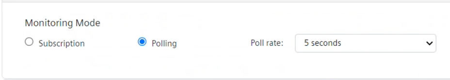

Configure the Polling Rate
You must perform the following procedure only if the OPC UA server in use does not support the subscription to points. It allows setting the polling rate for the OPC UA client to periodically read the points values.
- In the OPC UA Client Configuration section, click Server Settings.
- By default, subscription to points is selected.

- Under Monitoring Mode, select Polling.
- From the Poll rate, drop-down list, select the desired value.
Default value is 10 seconds.


The first read of the values is not immediate, but it will happen when the configured polling rate expires, after saving the changes and discovering the adapter configuration.
Polling Limits
The amount of traffic the driver can process depends on the following:
- Defaults threads in the driver: 75
- Latency in communication: the longer it takes to read or write a property on the end device, the fewer requests per minute per thread you can have.
- Computer with CPU i7 Quad Core and low latency (2ms): the driver can process 500,000 polls a minute.
- The latency between the driver and adapter. If they are on the same computer this is the best-case scenario. If the adapter is running on an embedded Linux computer somewhere else on the network, then each request takes longer to service.
Considering that the driver can support 30,000 objects, and there are 75 threads that can poll concurrently, the speed at which you can poll depends on how fast the adapter can pull values from your subsystem:
- Nothing faster than every 5 minutes for 30,000 points is recommended. If doing less you can poll faster.
Thousands of points polling at 10 seconds is not recommended.
- Requesting updates from each node at one-minute intervals is sufficient. Querying faster results in diminished returns in terms of performance.